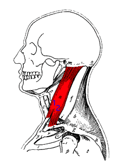

Omuz Üstü Hareketleri
Bu bölümde boyun ve trapez kaslarını hedefleyen egzersizleri bulacaksın.

Boyun Egzersizleri
Boyun kaslarını esneten ve güçlendiren temel egzersizleri keşfet.

Trapez Egzersizleri
Omuz ve ense arasındaki kasları çalıştıran etkili hareketler.